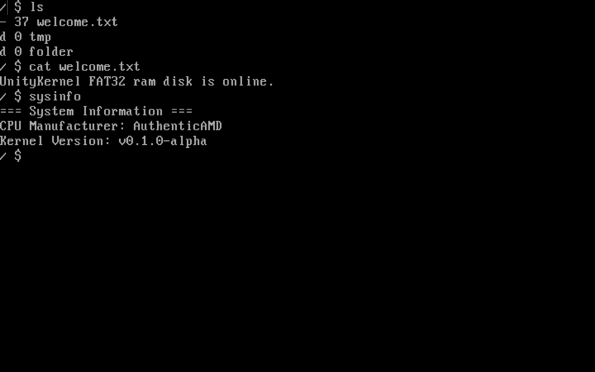
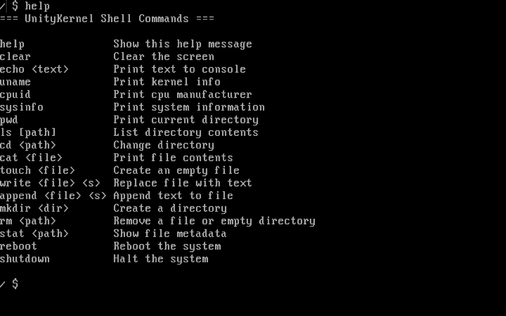

Description
Demowinter/UnityKernel - a free and open-source kernel made with C++. Our goal is to make a hybrid unix-compatible kernel for x86, x86-64 and AArch64 architectures. Currently the project is indev and contains only some basics like x86 BIOS support, shell, some basic I/O, basic command and FAT32 fs (currently works only in RamDisk). The kernel is being created and developed by 2 developers: Demowinter and TheProjectDark.
Screenshots


Repository
You can find the repository of the project on GitHub. The kernel is open-source and free to use, modify and distribute.